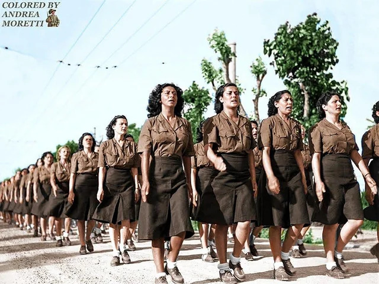

Contesto storico
Ci troviamo in via Torquato Tasso 14, dove oggi sorge la Scuola Media “Eugenio Donadoni”. Durante la Repubblica Sociale Italiana (1943-1945), questo edificio non era una scuola: ospitava una formazione della GIL (Gioventù Italiana del Littorio) e un nucleo del Servizio Ausiliario Femminile (SAF), corpo femminile volontario della RSI. Il comando principale aveva sede nella Casa del Fascio. Le giovani volontarie venivano preparate a svolgere con competenza e disciplina i compiti di assistenza, logistica e supporto al fronte che avrebbero poi svolto. Questo solo dopo l'8 settembre 1943 e dopo la nascita dell'RSI. Prima, infatti, il ruolo delle giovani era in linea con la visione fascista del ruolo della donna.
Il SAF fu ufficialmente istituito con il Decreto n. 447 del 18 aprile 1944, nel periodo successivo all’Armistizio dell’8 settembre 1943. Nel contesto bergamasco, il SAF contava circa 130 volontarie, giovani italiane di età compresa tra i 18 e i 40 anni. Le giovani del Servizio Ausiliario Femminile non erano destinate al combattimento diretto: il loro ruolo era quello di affiancare le strutture militari della Repubblica Sociale Italiana. Svolgevano servizi di assistenza negli ospedali, lavoro d’ufficio e segreteria presso i comandi, attività di propaganda e compiti logistici come il ristoro delle truppe. Attraverso questi incarichi, il regime intendeva sostenere lo sforzo bellico e liberare uomini da impiegare al fronte. È importante sottolineare che, nella concezione tradizionale del regime fascista, le donne inizialmente non erano ammesse nell’esercito né considerate adatte al servizio militare. L’ideologia fascista esaltava infatti la figura femminile come “angelo del focolare”, madre e moglie devota, custode della casa e responsabile dell’educazione dei figli secondo i valori del regime. La donna doveva contribuire alla grandezza della nazione soprattutto attraverso la maternità e il sostegno morale all’uomo combattente. L’ingresso delle donne nel Servizio Ausiliario Femminile avvenne quindi in un contesto di emergenza. Dopo l’8 settembre 1943, con la nascita della Repubblica Sociale Italiana e la grave carenza di uomini dovuta alla guerra e alle diserzioni, il regime di Salò si trovò costretto a rivedere in parte il proprio modello tradizionale. L’arruolamento femminile rispondeva alla necessità pratica di sostituire gli uomini nei servizi logistici e amministrativi, consentendo di inviarne il maggior numero possibile al fronte. In questo modo, pur mantenendo formalmente la subordinazione ai militari maschi e l’esclusione dal combattimento armato, il regime ampliò temporaneamente il ruolo pubblico delle donne per esigenze belliche.
🎧 Audio Lettura
Perché è un luogo della memoria
Il luogo testimonia l'adesione di molte giovani al mito fascista della donna ausiliaria, motivata da fedeltà al regime, amore per la patria, ma in parte anche dal desiderio di uscire dai tradizionali ruoli femminili. Dopo aver seguito i corsi di addestramento, prestavano giuramento secondo le formule delle forze armate repubblichine e, pur non combattendo con le armi, erano considerate personale militarizzato con la qualifica di volontarie di guerra. La partecipazione nazionale fu significativa: tra il maggio 1944 e l’aprile 1945 si registrarono 5.771 domande, con 1.016 ausiliarie attive a luglio 1944 e un totale di 4.412 volontarie prima dello scioglimento. La divisa comprendeva gonna lunga, giacca militare, basco con simbolo, composto dal fascio littorio. Cappotto e calze lunghe completavano la divisa; la disciplina imponeva rigore, rispetto gerarchico e cameratismo.
Emblema centrale del regime fascista preso in prestito dalla Roma antica, dove i littori lo portavano davanti ai magistrati come simbolo di autorità e potere. Durante il fascismo, il fascio littorio veniva usato ovunque: su bandiere, edifici pubblici, uniformi e documenti ufficiali, evocando disciplina, ordine e fedeltà allo Stato. Accostato agli elementi militari nel basco delle ausiliarie, simboleggiava l’autorità del regime e il legame tra cittadino e Stato.
🎧 Audio Lettura
Contenuti multimediali

Approfondimento: Lydia Gelmi Cattaneo
Lydia Gelmi Cattaneo nasce a Presezzo nel 1902 e vive al Castello di Valverde. Figlia di un ufficiale medico, appassionata di cultura, miniaturista e tra le prime donne a ottenere la patente di guida a Bergamo, si distingue per il coraggio e la generosità. Durante la Seconda Guerra Mondiale, tra il 1943 e il 1945, salva numerosi ebrei, tra cui Irene Weiss, nascondendoli e proteggendoli dai nazifascisti. Aiuta anche partigiani e prigionieri in fuga, mettendo a rischio la propria vita per difendere chi era perseguitato. Per il suo impegno è stata la prima donna bergamasca insignita del titolo di “Giusta tra le Nazioni”, riconoscimento per chi salva vite umane a rischio della propria. La sua vita resta esempio di coraggio, umanità e responsabilità civile per l’umanità intera, incarnando coraggio, umanità e responsabilità civile.
🎧 Audio Lettura
Fonti
Fonti bibliografiche
- Mario Pelliccioli, Itinerari di memoria. Un percorso a Bergamo tra fascismo, occupazione tedesca e Resistenza, Cooperativa A. Grandi / Moltefedi, Bergamo 2023.
- Mirella Serri, Mussolini ha fatto tanto per le donne! Le radici fasciste del maschilismo italiano, Longanesi, Milano 2022.
- Victoria De Grazia, Le donne nel regime fascista, Marsilio, Venezia 1993.
- Approfondimento sulla SAF
- Lydia tra le nazioni
- Le donne nella resistenza bergamasca